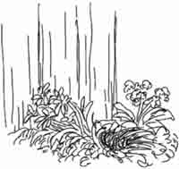
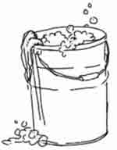
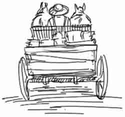

Oh, no! You have woken up on “the wrong side of the bed,” and things aren’t going well this morning. Will you end the day with a smile or a frown?
The Choice is Yours
#1. As you get dressed you hit your head on a shelf. Ouch! “Time for breakfast—hurry up!” someone calls. Will you
#2. Right at the most interesting point your little sister comes and asks you to play. “Can’t,” you say. But you don’t feel happy.

#3. As you head outside to feed the dog, Dad says, “Rover dug up Mom’s flowers—you better fix his pen.” You find the hole and
- Tie up Rover while you look for some wire to fix it. Go to #30.
- Sit down and pet him, wishing that you could skip chores today. Go to #18.
#4. It is late when you sneak into the kitchen, and everything is dark. Where is everyone? Suddenly your sister comes in. “Guess what! We just got to ride in a wagon down the street!” You feel worse than ever. THE END
#5. You are staring into your cereal when your brother says, “Did you hear me? Please pass the milk!” As you shove the jug over, it sloshes. Mom tells you to clean up.
- You pretend you didn’t hear. Go to #8.
- You clean up slowly. Go to #3.
- “I’m sorry,” you say, and really mean it. Go to #21.
#6. Suds and splash! Everyone has fun and soon the car shines. You are just about to scrub the garage door when Sister calls you.

#7. Mr. Kent’s barn turns out to be a large pig sty. Smelly bedding has to be shoveled and your back soon begins to hurt. You try to sneak out the back door and slip into a mud puddle. Yuk! Mr. Kent barely rescues you from the pigs. Go to #28.
#8. Mom takes you aside and talks about obeying cheerfully. It is a bad day and you don’t want to be cheerful.
- Tell Mom all about it and pray together. Go to #15.
- Pretend to listen, and gladly escape outside. Go to #11.
#9. You find the little children and push them on the swing for awhile. “Let’s go take some flowers to Grandma Wood,” sister says. You all gather a bouquet. Go to #33.
#10. Everyone is hungry by the time you’re done and Brad offers to go in and ask about lunch. After awhile your brother says he’ll go find him. After a long time you go inside and find them munching apples and playing a game.
- Yell at them for being so mean. Go to #22.
- Burst into tears. Go to #24.
- Swallow the hurt feeling and try to smile. Go to #33.
#11. As you mope through your chores you come upon the dog in the garbage can eating the ice cream carton and covered with car grease. Its your job to clean him up. What a mess! Go to #20.
#12. At breakfast Mom says the neighbor boy is coming over for the day. He is quite a pest and you don’t feel very happy.
#13. Sister shows you the recipe and everything gets done in time. You pick a bouquet and put special cards around for everyone. Go to #29.
#14. Things don’t turn out well, and you are sent to clean up your bedroom. Go to #34.
#15. You remember the song “I’ll be a sunbeam for Jesus” and determine to do your best. How about surprising Mom with folding all the laundry? When that is done you
#16. “Their van is getting fixed,” she says. You try to think of another way to get there, but nothing will work. The day seems so disappointing. What can you do?
#17. You can’t, so when Brad starts following you around you just pretend he isn’t there. Mom finds out and tells you to be kind.
#18. Your big sister comes by. “Hurry up! Mr. Kent asked us to come over and help clean his barn.” You think
- It will be fun. You fix the hole with a rock and hurry to finish your chores. Go to #7.
- It will be too hard. You sigh and go slowly to water the garden. Go to #11.

#19. You get out things for the sandwiches and then try to find the frozen lemonade. Maybe it was used up. You decide to make a batch yourself, but you can’t find the recipe.
#20. Before you get a chance to have any fun, Dad’s old friend comes and you have to sit still for a long time. How terribly boring! The day ends with your head aching. THE END
#21. As you sweep out the hall you hear Mom say, “I’m sorry it won’t work out—maybe we can plan it another day.” The special trip to the zoo with your cousins has been canceled!
#22. You stomp off and think of all the terrible things that have happened. Life is not fair! But you know that is not true. Go to #4.
#23. “Oh, we forgot. I’m sorry,” Brother says. “Want to play with us?” You join them. Go to #20.
#24. “How about fixing your bike this morning?” Mom suggests. Good idea. Big Brother works with you on it, but it takes awhile. Suddenly the chain snaps.
#25. When Mom asks you to help in the kitchen…
#26. When Brad comes you are ready to begin weeding together. He soon gets bored, so you take him to the swing for awhile. You are glad when Big Brother needs help washing the car. Go to #6.

#27. Mom suggests watering the flowers together and things go better. You are having fun getting really wet when Big Brother brings a pail of soapy water to wash the car. Brad wants to spray him. You say
#28. Your clothes smell so bad that everyone makes comments and holds their noses.
#29. Everyone is surprised and lunch is delicious. Mom thanks you for being a big helper and says that you can all go down to the park for the afternoon. What a lovely way to end the day! THE END
#30. The hole is soon fixed and you try to fix up the flowers, too. Mom comes out and smiles. You smile back. Go to #2.
#31. The afternoon goes better as you choose to be helpful. Now you can’t wait to tell Dad about all the day’s adventures—including a special pie for supper! THE END
#32. Sister wants to make a surprise treat for lunch. “I’ll make cookies and jello salad. You can mix lemonade and help fix sandwiches,” she says. Put on an apron and get to work! Go to #19.
